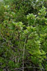
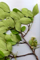
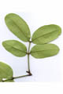
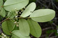
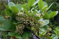
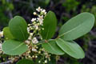
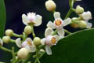
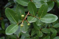
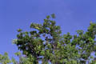
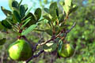
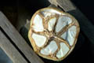
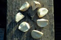
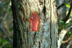
Diagnostic characters
Botany & morphology
Reproductive biology
Ecology
Distribution
Uses
Large evergreen tree up to 15 m tall, bark red with thick flakes; wood red in colour; pneumatophores woody. Leaves compound. Inflorescence panicle. Fruits small, about size of an orange.
Leaves compound, paripinnate, leaflets 2 - 4 paired, 7-12 x 3-6 cm, ovate, apex acute, base oblique.
Inflorescence lateral cymes, up to 8 cm long.
Flowers white; calyx 4 lobed, short; petals 4, free, spreading, contorted; stamens 8; ovary 4-celled, style thick, stigma short.
Fruits capsular globose, upto 12 cm in diameter, brown; seeds tetrahedral.
Trunk surface rough, dark brown, fissured; bark peeling in narrow strips.
Buttresses absent or very short; horizontal roots developing blunt, peg like, pneumatophores up to 20 cm long and 3 - 4 cm in diameter.
Pollination by bees and short-tongued insects.
Sporadic in the interior elevated areas of mangrove forests.
In India it occurs in Sunderbans, Mahanadi and Andamans and extends upto Malaysia.
Wood used for making furniture and to extract tannin.
Top of the page